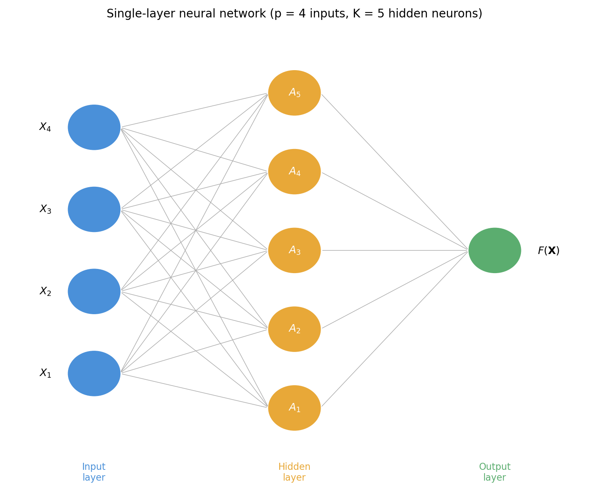
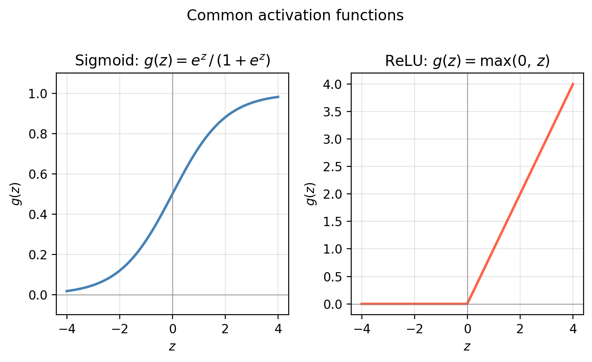
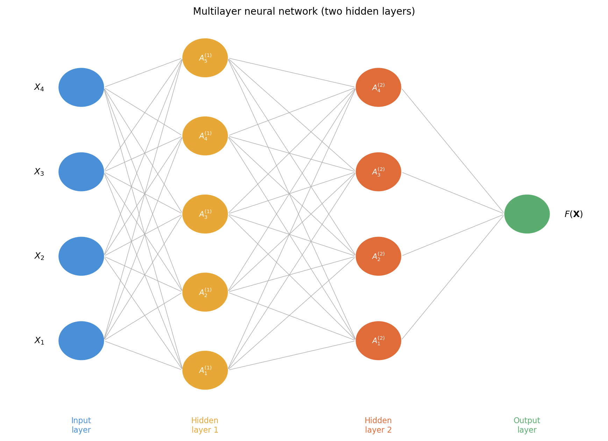
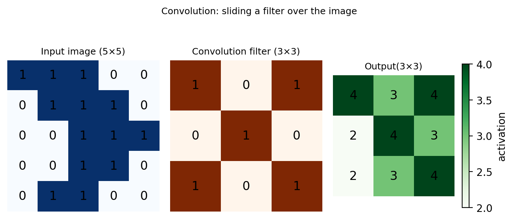
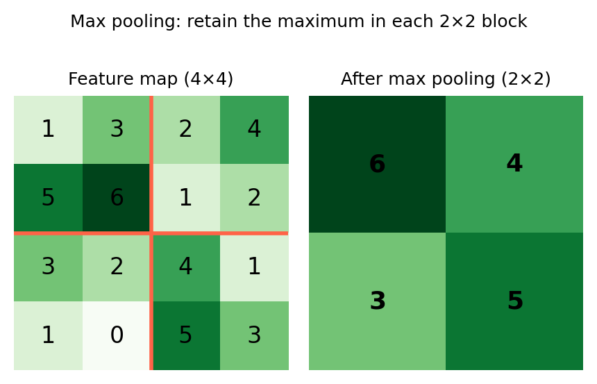

Neural Networks
In this lesson we introduce:
- A brief history of neural networks and why they are relevant today
- The structure of a single-layer neural network: input layer, hidden layer, and output layer
- How activations are computed and what activation functions do
- Multilayer (deep) neural networks and how they extend the single-layer idea
- Convolutional neural networks (CNNs) for image data
These notes are based on chapter 10 of An Introduction to Statistical Learning with Applications in Python (James et al. 2023). The example data is synthetic and was generated with the aid of Claude Code for the purpose of this lesson.
Neural network applications
Neural networks appeared appeared early in the history of machine learning (going back to the 1960s) generated significant enthusiasm and research, and then interest in them declined as other methods such as support vector machines and random forests emerged. It was until the 2010s that they remerged: new architectures (particularly deep networks with many hidden layers) and massive datasets that made it feasible to train those architectures. And the deep learning era initiated!
Deep neural networks are at the heart of many contemporary technological adlvancements:
Large language models: used for text and code generation through platforms such as ChatGPT and Claude are neural network models with likely trillions of parameters (the exact number and values are clealry an industry secret!).
Image recognition: used to identify objects in images uses neural networks and has applications from autonomous vehicles to medical imaging.
In the realm of environmental applications, these are some that have occurred in the past year (selected for student interest):
- Yu et al. 2025: Discovering inequities for disadvantaged communities in access and performance of electric vehicle charging stations.
- Wunsch et al. 2022: Investigating projected groundwater leves due to climate change in Germany.
- Hopkinson et al. 2020: Calssifying 3D models of coral reefs into different species and substrates.
In this lesson we will take a high-level view at neural networks to understand their structure and basic mechanisms.
Single-layer neural network
Given a vector of features \(\mathbf{X} = (X_1, \ldots, X_p)\) and a qualitative response variable \(Y\), our goal is to learn a function \(F(\mathbf{X})\) to predict \(Y\): this is the same goal we have had throughout the course.
The architecture
A single-layer neural network (a network with one hidden layer) has three core components:
Input layer. The \(p\) features \(X_1, \ldots, X_p\) form the input layer.
Hidden layer. There are \(K\) neurons in the hidden layer (yellow circles).
Output layer. The final model output for the model (green circle).
The process is as follows:
Start with the input layer. An observation \((X_1, \ldots, X_p)\) is “put through” the network from left to right.
All features go into a neuron and an activation is calculated. Each neuron takes in all \(p\) input features and computes an activation \(A_k\). Each activation \(A_k\) is computed in two steps:
First, a linear combination of all input features is formed using a bias \(w_{k0}\) and \(p\) weights \(w_{k1}, \ldots, w_{kp}\): \[w_{k0} + w_{k1} X_1 + \cdots + w_{kp} X_p.\]
Second, this quantity is passed through a nonlinear activation function \(g(z)\): \[A_k = g(w_{k0} + w_{k1} X_1 + \cdots + w_{kp} X_p).\]
So the activation at neuron \(k\) depends on a choice of activation function and \(p + 1\) parameters: \(p\) weights and one bias.
The hidden layer computes \(K\) activations \(A_1, \ldots, A_K\), one per neuron.
Output layer. The final model is a linear combination of all activations:
\[F(X_1, \ldots, X_p) = \beta_0 + \beta_1 A_1 + \cdots + \beta_K A_K,\]
where \(\beta_0, \beta_1, \ldots, \beta_K\) are an additional set of \(K + 1\) parameters to be estimated.
Fitting a neural network means using the training data to find the weights \(w_{kj}\) and biases \(w_{k0}\) for each neuron and the output coefficients \(\beta_0, \beta_1, \ldots, \beta_K\) that minimize a loss function which is a measure of the error. The mean squared error loss is used for regression and cross-entropy is used for classification tasks. The fitting process is out of the scope of what we will cover, but we recommend the textbook chapter 10.7 as further reading on this topic.
Activation functions
The activation function introduces the nonlinearity that gives neural networks their modeling power. Without it, the Two of the most common choices are:
- Sigmoid: \(\displaystyle g(z) = \frac{e^z}{1 + e^z}\): squashes any input to the interval \((0, 1)\).
- ReLU (Rectified Linear Unit): \(g(z) = \max(0, z)\): outputs \(0\) for negative inputs and the input itself for non-negative inputs.

Multilayer neural networks
In practice, neural networks typically have more than one hidden layer and many neurons per layer (often hundreds or more). This is what makes them deep neural networks.
The input layer is still the same: the features \(X_1, \ldots, X_p\).
The first hidden layer has \(K_1\) neurons. The \(k\)-th neuron in the first layer receives all \(p\) inputs and computes an activation
\[\begin{aligned} A_k^{(1)} &= g\!\left(w_{k0}^{(1)} + w_{k1}^{(1)} X_1 + \cdots + w_{kp}^{(1)} X_p\right) \\ &= g\!\left(w_{k0}^{(1)} + \sum_{j=1}^{p} w_{kj}^{(1)} X_j\right), \end{aligned}\]
where \(w_{k0}^{(1)}\) and \(w_{kj}^{(1)}\) are, respectively, the bias and weights for the \(k\)-th neuron in the first layer.
The second hidden layer now takes the \(K_1\) activations from the first hidden layer as its inputs and computes new activations:
\[\begin{aligned} A_k^{(2)} &= g\!\left(w_{k0}^{(2)} + w_{k1}^{(2)} A_1^{(1)} + \cdots + w_{kK_1}^{(2)} A_{K_1}^{(1)}\right) \\ &= g\!\left(w_{k0}^{(2)} + \sum_{j=1}^{K_1} w_{kj}^{(2)} A_j^{(1)}\right). \end{aligned}\]
This process continues layer by layer. The output layer is a final linear combination of the last hidden layer’s activations.

As the network grows deeper, it can represent increasingly complex functions. Early layers tend to capture simple, low-level patterns; deeper layers combine them into progressively abstract representations.
To build an intuitive understanding of how a deep network works, watch this video by 3Blue1Brown. As you watch, try to answer the following questions:
Check-in: 3Blue1Brown video
- How does the network represent a handwritten digit as an input?
- What does each neuron in a hidden layer conceptually “detect”?
- Why can depth (more layers) capture more complex patterns than width (more neurons in a single layer)?
The code below fits a two-hidden-layer network on our HAB dataset and compares its decision boundary to the single-layer model.
Convolutional neural networks
The neural networks we have studied so far treat the input as a flat vector of features. This works well for tabular data, but it discards important spatial structure when the input is an image. Every pixel is treated independently, with no awareness of which pixels are neighbors.
Convolutional Neural Networks (CNNs) are architectures that have great performance in image data. Intuitively, rather than connecting every input directly to every neuron, CNNs perform additional work to identify low-level features within the image — small edges, patches of color, and textures. These low-level features are then combined into higher-level features (shapes, objects, patterns) in later layers. The presence or absence of these high-level features ultimately determines the predicted class.
Convolution filters and the convolution layer
A convolution filter (also called a kernel) is a small matrix that acts as a feature detector. We slide this filter across the image, computing a dot product between the filter and each overlapping patch of pixels. The result highlights regions of the image that closely resemble the filter.

The feature map highlights regions in the input image that most closely resemble the filter — higher values (darker green) indicate a stronger match. A convolution layer applies many such filters simultaneously, each one detecting a different low-level feature. Crucially, the filters are learned from the training data rather than defined by hand, this means the network discovers the most useful features for the task automatically during training.
Pooling layer
A pooling layer reduces the spatial dimensions of the feature maps, making the representation more compact and less sensitive to small shifts in the position of a feature. The most common approach is max pooling: the feature map is divided into non-overlapping blocks (typically 2×2), and only the maximum value within each block is retained.

Full CNN architecture
A complete CNN typically consists of:
- Convolution layers: learn low-level features (edges, textures, patches of color).
- Pooling layers: progressively reduce spatial dimensions.
- Fully connected layers: standard neural network layers that combine the high-level features to produce the final prediction.
- Flattening: converts the final feature maps into a flat vector.

References
James, Gareth, Daniela Witten, Trevor Hastie, Robert Tibshirani, and Jonathan E. Taylor. 2023. An Introduction to Statistical Learning: With Applications in Python. Springer Texts in Statistics. Cham: Springer.